AI × Science 文献日报 2026/06/22
聚焦 AI × 物理 / 化学 / 材料交叉方向，自动过滤明显偏题的医学、教育与社会科学内容，并按主题重新排版，便于快速深读。
AI | 物理 | 化学 | 材料 | 交叉学科
原始候选 95 篇中，已剔除 0 篇明显偏离主线的内容，并从剩余 95 篇主线相关文献中精选 60 篇进入日报页，优先保留 AI × 物理 / 化学 / 材料交叉与关键计算方法工作。
今日摘要
总览：今日共收录60篇文献。
热点：
今日文献
60 篇 · 11 含图深析-
01
📊 含图深析
📖 展开分析 + 配图
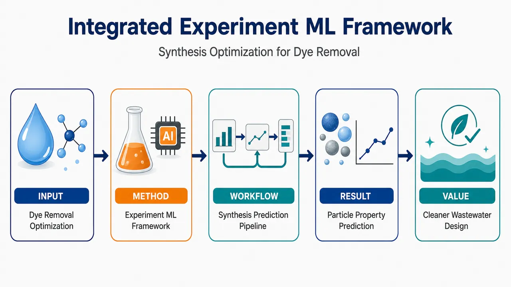
研究问题如何在共沉淀法制备铁氧化物纳米粒子时，通过选择沉淀剂并调控合成条件，获得更适合染料去除的晶粒尺寸和比表面积；核心矛盾是传统实验筛选耗时、参数关系复杂，难以快速预测材料结构与吸附应用性能。创新方法构建“实验合成—沉淀剂对比—机器学习预测”的一体化框架：用两种沉淀剂制备铁氧化物纳米粒子，获取结构表征数据，再训练机器学习模型预测晶粒尺寸和比表面积，把材料合成参数转化为可计算、可预判的染料去除性能优化线索。工作流程输入合成条件与沉淀剂类型，经共沉淀反应生成铁氧化物纳米粒子；随后进行材料表征，提取晶粒尺寸、比表面积等关键指标；再将实验数据输入机器学习模型进行训练与预测；最终输出面向染料去除应用的优选纳米粒子结构参数和合成方案。关键结果研究实现了对两种沉淀剂制备铁氧化物纳米粒子的对比分析，并将机器学习用于晶粒尺寸和比表面积预测；结果指向一种可由实验数据驱动的合成优化路径，为筛选更高染料去除潜力的铁氧化物纳米材料提供预测工具，但摘要未给出具体去除率、吸附容量或模型精度数值。应用价值该框架可减少反复试错式纳米材料合成实验，帮助快速锁定适合染料废水处理的铁氧化物纳米粒子制备条件；在视觉上可呈现为“实验烧杯 + 纳米颗粒 + 机器学习芯片 + 染料废水净化”的闭环优化系统。核心概览
该论文面向染料去除应用，研究共沉淀法合成铁氧化物纳米颗粒，并结合实验设计、响应面法和机器学习优化/预测晶粒尺寸与比表面积，属于纳米材料制备优化与环境吸附材料方向。
方法要点
- 采用共沉淀法制备铁氧化物纳米颗粒。
- 比较不同沉淀剂效果，摘要明确提到氨水优于另一试剂，但另一试剂名称未详述。
- 考察合成温度、搅拌速率和反应时间对材料性能的影响。
- 使用实验设计与响应面法进行工艺优化。
- 引入机器学习模型预测晶粒尺寸和比表面积。
- 性能指标聚焦于晶粒尺寸和比表面积，并将材料应用背景设定为染料去除。
关键结果
- 氨水作为沉淀剂表现优于另一种沉淀剂。
- 在摘要所述条件下获得了晶粒尺寸 86 Å 的铁氧化物纳米颗粒。
- 对应比表面积达到 87.23 m²/g。
- 研究考察了温度 30–90 °C、搅拌速率 100–600 rpm、反应时间 15–75 min 对材料性能的影响。
- 摘要表明实验设计、响应面法和机器学习被用于合成优化与预测建模，但具体模型类型、精度指标和验证方式摘要未详述。
创新性判断
- 可能的新颖点在于将实验设计、响应面法与机器学习整合到铁氧化物纳米颗粒共沉淀合成优化中，用于同时预测晶粒尺寸和比表面积。
- 相比单纯实验优化，该工作可能更强调“实验—机器学习”一体化框架，提高合成条件筛选与性能预测效率。
- 面向染料去除应用，将材料制备参数、结构性质与应用目标关联起来，具有一定应用导向。
- 但摘要未详述机器学习算法、数据规模、对照方法和染料去除实测性能，因此其创新性强弱仍需全文验证。
-
02
📊 含图深析
📖 展开分析 + 配图
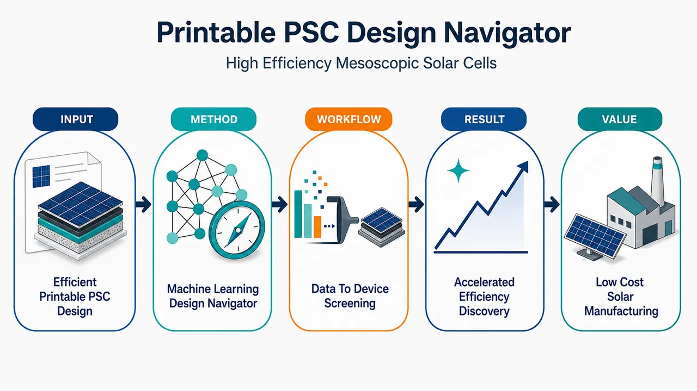
研究问题如何摆脱传统试错实验，在可印刷、介孔、无空穴导体钙钛矿太阳能电池中快速找到高效率的材料组合、结构参数与工艺设计方案。创新方法将机器学习作为器件设计导航器，用数据模型替代盲目实验筛选，面向“可印刷介孔 + 无空穴导体”这一低成本特殊结构预测潜在高效设计；核心 Aha 点是把复杂材料和器件参数转化为可计算、可筛选的设计空间。工作流程输入已有材料、器件结构、工艺参数与性能数据；构建描述材料和器件特征的数据表；训练机器学习模型学习参数与效率之间的关系；利用模型预测和排序候选设计；筛选出更可能实现高效率的无空穴导体介孔钙钛矿太阳能电池方案。关键结果研究表明机器学习可用于支持该类可印刷介孔钙钛矿太阳能电池的设计决策，并有望加速高效率方案发现；摘要未提供具体效率提升数值、最佳器件性能、模型精度或实验验证结果。应用价值为低成本、可印刷、无空穴导体钙钛矿太阳能电池提供数据驱动设计路径，减少实验试错成本，缩短材料与器件优化周期，推动可规模化光伏器件开发。核心概览
本文属于钙钛矿太阳能电池与机器学习辅助器件设计方向，聚焦可印刷、介孔、无空穴导体结构的高效率设计优化。
方法要点
- 研究对象是可印刷介孔钙钛矿太阳能电池，且采用无空穴导体结构。
- 论文意图使用机器学习辅助材料选择或器件参数筛选。
- 具体训练数据来源、特征构建、模型类型、优化流程与验证方式，摘要未详述。
- 是否结合实验制备、模拟计算或文献数据库进行闭环优化，摘要未详述。
关键结果
- 摘要表明该工作旨在推进高效率无空穴导体介孔钙钛矿太阳能电池的设计。
- 机器学习被用于支持材料或器件设计决策。
- 摘要未给出效率提升数值、最佳器件性能、模型预测精度或实验验证结论。
- 摘要未说明筛选出的具体材料组合、结构参数或工艺条件。
创新性判断
- 可能的新颖点在于将机器学习引入可印刷介孔、无空穴导体钙钛矿太阳能电池的设计优化，而非传统试错式实验筛选。
- 若论文确实实现了材料/参数的高效预测与实验验证，则其贡献可能体现在加速该类低成本、可印刷器件的性能优化；但摘要未详述，无法确认。
- 相比常规钙钛矿太阳能电池机器学习研究，其特色可能是聚焦“无空穴导体”和“介孔可印刷”这一特定器件架构；该判断基于题名和摘要信息，存在不确定性。
-
03
📊 含图深析
📖 展开分析 + 配图
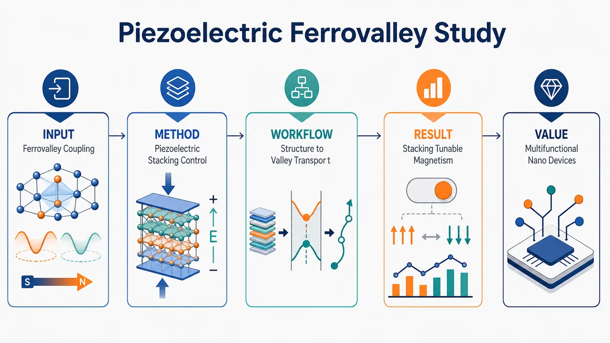
研究问题二维铁谷材料中，谷自由度、磁性、压电性与输运行为如何相互耦合？尤其是能否通过压电效应和层间堆垛方式，像“旋钮”一样调控反常谷霍尔效应与磁性状态。创新方法将铁谷效应、反常谷霍尔输运、压电响应和堆垛依赖磁性放入同一二维材料框架中分析；核心 Aha 点是利用压电形变和层间堆垛作为可视化调控手柄，实现对谷输运与磁性排列的协同操控。工作流程从二维铁谷材料结构出发，识别谷相关电子态与反常谷霍尔效应；进一步分析材料的压电响应，评估应变或电-机械耦合对性质的调节；随后比较不同层间堆垛构型下的磁性差异；最终建立“结构堆垛—压电调控—谷输运—磁性响应”的多物理关联图景。关键结果该体系表现出反常谷霍尔效应，说明不同谷可产生可区分的横向输运响应；材料具有压电响应，可作为外部调控通道；不同堆垛方式会改变磁性行为，显示出明显的堆垛依赖磁学特征；这些结果共同指向二维铁谷材料中的多功能耦合调控能力。应用价值为低维谷电子器件、自旋/谷联合信息处理器件和多功能纳米机电器件提供设计思路；可将压电应变、层间堆垛和磁性状态转化为可调控的信息开关，用于未来可重构、低功耗、多物理场耦合纳米器件。核心概览
该论文关注二维铁谷材料，研究其反常谷霍尔效应、压电响应、输运性质及堆垛方式对磁性的影响，属于二维磁性/谷电子学与多功能纳米器件调控方向。
方法要点
- 围绕二维铁谷体系，分析其反常谷霍尔效应与谷相关输运行为。
- 考察材料的压电响应，探讨利用压电效应进行性质调控的可能性。
- 比较不同堆垛方式下的磁性差异，研究堆垛依赖的磁学行为。
- 将谷自由度、磁性、压电性和输运特性联系起来，面向多功能纳米器件应用进行讨论。
- 具体计算方法、模型体系、材料名称与参数设置摘要未详述。
关键结果
- 摘要明确指出该工作涉及二维铁谷体系中的反常谷霍尔效应。
- 摘要明确指出该体系具有压电响应，并可用于性质调控。
- 摘要明确指出堆垛方式会影响磁性，存在堆垛依赖的磁学行为。
- 摘要认为这些性质有助于多功能纳米器件调控。
- 具体定量结果、性能指标、能带特征、磁矩大小、霍尔响应强度等摘要未详述。
创新性判断
- 可能的新颖点在于将铁谷效应、压电调控、反常谷霍尔效应和堆垛依赖磁性结合到同一二维材料体系中讨论。
- 若该工作确实实现了通过压电效应或堆垛方式调控谷输运与磁性，则相对常规二维谷电子学或二维磁性研究具有多物理场耦合调控的新意。
- 其潜在创新还可能体现在面向多功能纳米器件的协同设计思路，但具体是否为首次提出、相比已有材料有何优势，摘要未详述，无法确定。
-
04
📊 含图深析
📖 展开分析 + 配图
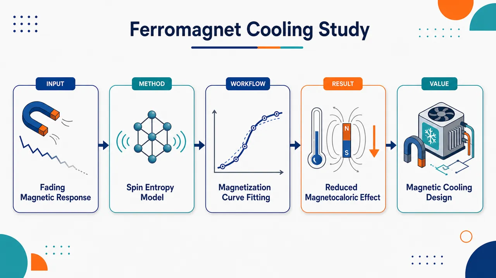
研究问题铁磁体在磁结构相变附近为何会出现磁化强度下降、磁化率降低以及磁热效应减弱：画面可表现为铁磁晶格从有序排列转向结构重排，磁矩箭头变短、变乱，旁边的磁热效应温度变化曲线同步下滑。创新方法提出一个同时纳入自旋交换能与磁子系统熵的理论模型，把“磁矩相互作用”与“磁熵贡献”放进同一热力学框架，用磁化曲线拟合揭示磁结构相变如何削弱磁响应；Aha 点是用熵与交换能的竞争解释磁热效应衰减，而非只做经验曲线拟合。工作流程输入铁磁体磁化曲线及相变附近温度/磁场信息；建立包含自旋交换能和磁子系统熵的模型；拟合磁化曲线；提取磁化强度随温度和磁场的变化；进一步推导磁化率与磁热效应变化；输出相变附近磁响应下降的理论解释。关键结果模型能够再现磁结构相变附近磁化强度下降，并解释磁化率降低与磁热效应减弱；画面可用三条下降曲线并列呈现：磁化强度 M 下滑、磁化率 χ 下滑、磁热效应 ΔT 或 ΔS 下滑，三者共同指向“磁结构相变区”。应用价值为理解和预测磁制冷材料在相变附近性能衰减提供理论工具，可帮助筛选或优化铁磁材料，避免在关键工作温区出现磁热效应下降，从而提升磁制冷器件的稳定性与设计可靠性。核心概览
本文属于磁性材料与磁热效应理论研究。作者构建包含自旋交换能和磁子系统熵的理论模型，并通过拟合磁化曲线，解释铁磁体在磁结构相变附近磁化强度、磁化率及磁热效应下降的现象。
方法要点
- 建立同时考虑自旋交换能与磁子系统熵的理论模型。
- 利用该模型拟合磁化曲线。
- 通过磁化曲线分析磁结构相变附近的磁化强度变化。
- 从模型中讨论磁化率和磁热效应在相变附近的下降行为。
- 具体材料体系、参数形式、拟合方法与实验条件摘要未详述。
关键结果
- 模型能够描述磁结构相变附近磁化强度的下降。
- 模型能够解释或拟合磁化率在该区域的降低。
- 模型也用于描述铁磁体磁热效应的减弱。
- 摘要未给出定量结果、拟合优度、温度范围或具体材料数据。
创新性判断
- 可能的新颖点在于将自旋交换能与磁子系统熵同时纳入一个理论框架，用于解释磁结构相变导致的磁热效应和磁化率下降。
- 相比单纯经验拟合磁化曲线的工作，该研究可能更强调热力学/磁子系统熵对磁热效应减弱的作用。
- 其创新性强弱无法仅凭摘要准确判断，因为摘要未详述模型形式、与已有理论的差异、适用材料及验证程度。
-
05
📊 含图深析
📖 展开分析 + 配图
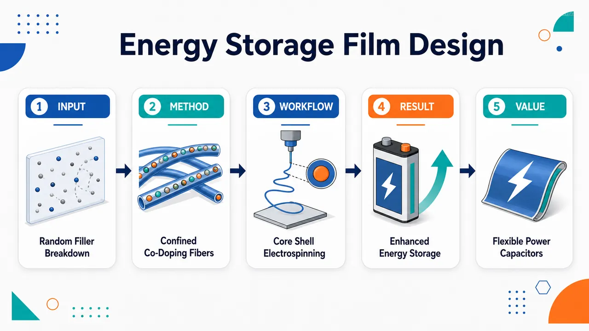
研究问题如何避免传统聚合物介电薄膜中纳米填料随机分散导致的缺陷、局部电场集中和击穿风险，并在保持薄膜可加工性的同时提升储能密度与储能效率。创新方法通过同轴静电纺丝构筑“壳层包裹—铁电芯层”的纤维微结构，将 BaTiO₃ 与 Al₂O₃ 纳米粒子共同限域在铁电相芯层内，并利用纳米粒子自组装形成受控空间分布，实现高介电响应与绝缘增强的协同。工作流程以聚合物/铁电相溶液为纤维芯层载体，加入 BaTiO₃ 与 Al₂O₃ 纳米粒子进行共掺杂；经同轴静电纺丝形成芯壳纤维；纳米粒子在铁电芯层中自组装并被限域排列；随后制备成介电复合薄膜；通过电场极化测试评估储能性能。关键结果限域共掺杂结构使 BaTiO₃ 的高介电贡献与 Al₂O₃ 的绝缘/击穿抑制作用在铁电芯层中协同发挥，相比随机填充型复合薄膜表现出更优的介电储能性能；具体能量密度、效率和击穿强度提升数值在所给内容中未披露。应用价值为高性能柔性聚合物介电储能薄膜提供一种结构设计思路，可用于高功率密度电容器、脉冲功率器件、柔性电子和先进电气绝缘储能系统。核心概览
该论文属于聚合物基介电储能薄膜方向，利用同轴静电纺丝在铁电芯层中限域共掺杂 BaTiO3 与 Al2O3 纳米颗粒，以提升介电膜储能密度和效率。
方法要点
- 采用同轴静电纺丝构筑具有铁电芯层的纤维结构。
- 在铁电芯层中引入 BaTiO3 和 Al2O3 纳米颗粒，形成限域共掺杂体系。
- 通过纳米颗粒在铁电相中的自组装/限域分布构建聚合物基介电膜。
- 利用 BaTiO3 的高极化特性、Al2O3 的宽带隙特性以及二者异质界面效应协同调控介电储能性能。
关键结果
- 摘要明确指出，该限域共掺杂介电膜实现了储能性能提升。
- 性能提升被归因于 BaTiO3、Al2O3 及 BaTiO3/Al2O3 异质界面的协同作用。
- 研究目标是获得高储能密度与高效率的介电薄膜。
- 具体储能密度、效率、击穿强度、介电常数等数值摘要未详述。
创新性判断
- 可能的新颖点在于将 BaTiO3 与 Al2O3 纳米颗粒同时限域引入同轴静电纺丝纤维的铁电芯层，而非简单均匀共混；但摘要未提供与已有工作的直接对比。
- 可能通过 BaTiO3/Al2O3 异质界面实现极化增强与漏电/击穿调控的协同优化，这是相对单一填料体系的潜在创新点；具体机制证据摘要未详述。
- “纳米颗粒自组装于铁电相”可能是结构设计上的特色，但其自组装形貌、尺度和可控性摘要未详述，创新程度仍需全文验证。
-
06
📊 含图深析
📖 展开分析 + 配图
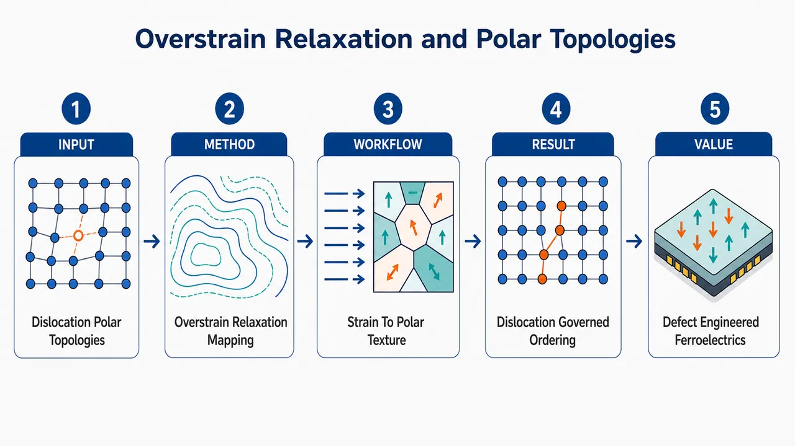
研究问题铁电超晶格在应变弛豫过程中，是否会进入一种“过应变弛豫态”，以及这种异常结构状态如何改变极化涡旋、畴结构等极性拓扑的形成与演化；核心关注点是位错缺陷是否从传统的“破坏因素”转变为主导极性拓扑重构的关键开关。创新方法将“过应变弛豫态”作为观察铁电超晶格的新物理窗口，把外延应变释放、位错网络和极性拓扑结构放在同一张机制图中分析；Aha 点在于突出位错不是背景缺陷，而像嵌入晶格中的“拓扑指挥线”，可通过局域应变场重新编排极化方向和拓扑形貌。工作流程输入为受外延约束的铁电超晶格薄膜；随着层状结构累积应变，晶格通过位错产生应变弛豫，并进一步进入过应变弛豫状态；位错周围形成强局域应变梯度和结构畸变；这些局域场诱导极化矢量旋转、畴壁偏转和拓扑纹理重排；最终输出由位错位置和应变释放程度共同决定的极性拓扑图案。关键结果研究揭示铁电超晶格中存在过应变弛豫态，并指出位错在极性拓扑结构的产生、定位和演化中起主导作用；结果把“应变弛豫—位错—极性拓扑”三者建立为连续因果链，说明缺陷可成为调控极化拓扑的主动工具，而不仅是降低材料质量的扰动源。应用价值该研究为铁电氧化物超晶格的拓扑极化设计提供新思路：通过控制位错、应变释放和界面结构，可定向塑造极性拓扑纹理，用于高密度铁电存储、可重构纳米电子器件、拓扑功能材料以及应变工程驱动的新型氧化物器件设计。核心概览
该论文研究铁电超晶格中的过应变弛豫态，关注位错如何主导极性拓扑结构的形成与演化，属铁电氧化物/拓扑极化调控方向。
方法要点
- 以铁电超晶格为研究对象，聚焦其应变弛豫行为及相关结构状态。
- 将“过应变弛豫态”作为核心物理现象进行分析。
- 重点考察位错与极性拓扑结构之间的关联。
- 从摘要可推断，论文强调位错在极性拓扑形成和演化中的主导作用。
- 具体表征手段、样品体系、理论模型或模拟方法摘要未详述。
关键结果
- 论文揭示了铁电超晶格中存在或可形成“过应变弛豫态”。
- 位错被认为是极性拓扑结构形成与演化的主导因素。
- 该工作将应变弛豫、位错和极性拓扑三者联系起来，说明缺陷并非仅是扰动因素，也可能调控拓扑极化状态。
- 具体极性拓扑类型、演化路径、定量结果和性能影响摘要未详述。
创新性判断
- 可能的新颖点在于：将“过应变弛豫态”引入铁电超晶格极性拓扑研究，并突出位错的主导调控作用。
- 相比通常强调外延应变、层厚、界面耦合等因素的铁电超晶格研究，该论文可能更强调位错缺陷在拓扑极化结构中的决定性作用。
- 这种判断仅基于摘要，具体是否相对已有工作具有突破性、是否首次发现或提出新机制，摘要未详述，需结合全文验证。
-
07
📖 展开分析 + 配图
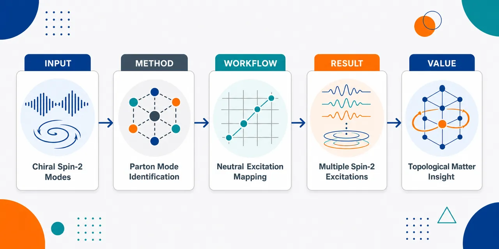
研究问题分数量子霍尔体系中是否真实存在几何理论预言的“手征自旋2中性激发”，以及这些中性集体模式能否作为电子分裂为部分子的实验信号。创新方法把分数量子霍尔几何理论中的手征自旋2激发预言与实验观测到的多个中性激发模式直接对应，利用“多个自旋2中性模式”的出现作为识别部分子图像的关键证据。工作流程从分数量子霍尔样品出发，在强磁场二维电子体系中寻找中性激发谱；识别具有手征性和自旋2特征的集体模式；将观测到的多个模式与几何理论预言比对；进一步用部分子图像解释这些模式的来源。关键结果实验观测到多个手征自旋2中性激发，而不是单一中性模式；这些激发与分数量子霍尔几何理论预言相符，并为部分子在体系中涌现提供了实验支持。应用价值为理解分数量子霍尔态的内部结构提供新的实验窗口，强化部分子这一分数量子化准粒子图像，有助于发展拓扑物态、强关联电子系统和量子材料中的集体激发探测方法。核心概览
本文属于分数量子霍尔效应研究，围绕几何理论预言的手征自旋2中性激发，报告实验观测并将其解释为支持部分子图像的证据。
方法要点
- 以分数量子霍尔几何理论为理论背景，该理论预言存在手征自旋2中性激发。
- 通过实验观测分数量子霍尔体系中的中性激发模式；具体实验平台、测量手段和样品参数摘要未详述。
- 将观测到的多个手征自旋2中性激发与部分子图像进行关联解释。
关键结果
- 实验观测到多个手征自旋2中性激发。
- 这些观测结果被认为为量子霍尔效应的部分子图像提供了证据。
- 摘要未详述具体观测到的激发数目、能量尺度、填充因子或统计显著性。
创新性判断
- 可能的新颖点在于：将几何理论中预言的手征自旋2中性激发与实际实验观测直接联系起来。
- 另一潜在创新是：观测到“多个”此类激发，而非单一模式，这可能增强了对部分子图像的实验支持。
- 不过，摘要信息极少，无法判断其相对于既有实验的具体突破程度、技术创新或理论建模细节。
-
08
📊 含图深析
📖 展开分析 + 配图
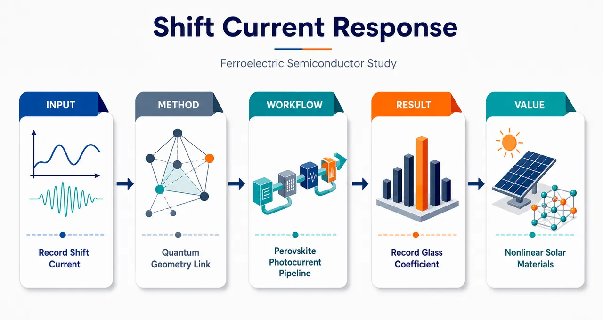
研究问题铁电卤化物钙钛矿能否在二阶非线性光伏效应中产生异常强的位移电流，并突破传统非中心对称光伏材料的格拉斯系数上限。创新方法以格拉斯系数作为核心量尺，将铁电极化结构中的位移电流响应与电子波函数的量子几何变化直接关联，突出“量子几何驱动超强非线性光伏响应”的机制图像。工作流程选取铁电卤化物钙钛矿材料 → 激发二阶非线性光伏/位移电流响应 → 测量或评估光生电流强度 → 计算格拉斯系数 → 分析响应峰值与波函数量子几何变化之间的联系。关键结果在铁电卤化物钙钛矿中观测到创纪录的格拉斯系数，显示出显著增强的位移电流光伏响应；高响应被归因于电子波函数量子几何的剧烈变化。应用价值为开发高效率、无结型、基于非线性光伏效应的新型太阳能转换器件提供材料方向，也提示可通过调控铁电结构和量子几何来设计超强光电响应材料。核心概览
该论文研究铁电卤化物钙钛矿的二阶非线性光伏/位移电流响应，报道创纪录的格拉斯系数，并将其归因于波函数量子几何变化。
方法要点
- 研究对象为铁电卤化物钙钛矿材料。
- 关注二阶非线性光伏效应中的位移电流响应。
- 使用格拉斯系数衡量材料的光伏响应强度。
- 将位移电流机制与波函数量子几何变化联系起来。
- 具体实验测量、样品制备、计算方法或模型细节：摘要未详述。
关键结果
- 在铁电卤化物钙钛矿中观测到创纪录的格拉斯系数。
- 该高格拉斯系数对应显著的位移电流响应。
- 论文认为该二阶非线性光伏效应源于波函数量子几何变化。
- 具体数值、对比材料、误差范围和测试条件：摘要未详述。
创新性判断
- 可能的新颖点在于：在铁电卤化物钙钛矿体系中实现或观测到异常强的位移电流光伏响应。
- “创纪录格拉斯系数”表明其性能可能超过既有同类或相关非中心对称光伏材料，但具体比较对象摘要未详述。
- 将高响应与波函数量子几何变化关联，可能强调了量子几何在非线性光伏效应中的作用；但是否提出新理论、验证新机制或仅作解释，摘要未详述。
-
09
📖 展开分析 + 配图
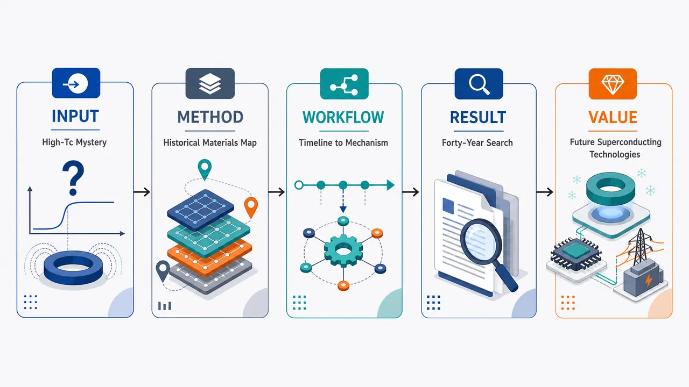
研究问题四十年来，高温超导材料为何能在远高于传统超导体的温度下无电阻导电？其材料发现脉络、设计规律与“非常规超导”机理之间存在怎样的内在联系。创新方法以时间轴式综述重构从35 K高温超导发现到多类材料体系探索的历史路径，将分散的材料发现、设计思想和非常规超导难题放在同一张“材料—机理”地图中综合审视。工作流程输入：四十年高温超导研究史、代表性材料发现、材料设计策略与机理争议；处理：按时间线梳理材料突破，归纳设计思想演变，连接非常规超导核心问题；输出：高温超导领域的发展图谱、设计启示与未解科学问题。关键结果高温超导研究已形成持续约四十年的材料探索浪潮，显著推动了超导材料设计从经验发现走向有目标的结构与电子态调控；同时，非常规超导机理仍是贯穿铜氧化物、铁基等体系的核心基础难题。应用价值为寻找更高临界温度、甚至接近室温的超导材料提供历史坐标和设计线索，并为低损耗输电、强磁场磁体、量子器件和未来能源技术中的超导应用奠定材料与机理基础。核心概览
这是一篇 Nature 评述，回顾自 35 K 高温超导首次发现以来约四十年的材料探索，讨论其对超导材料设计和非常规超导机理研究的推动，属于凝聚态物理/超导材料综述方向。
方法要点
- 通过历史回顾梳理高温超导材料发现与发展的主要脉络。
- 总结高温超导研究对材料设计策略的影响。
- 围绕“非常规超导”这一核心难题，评述相关科学问题与研究进展。
- 文章性质为评述性综述，摘要未详述具体实验、计算或理论模型方法。
关键结果
- 高温超导自 35 K 超导首次发现以来，已推动了持续约四十年的材料探索。
- 该领域显著促进了超导材料设计思想的发展。
- 高温超导仍与非常规超导机理等基础难题紧密相关。
- 摘要未详述具体材料体系、临界温度提升幅度、实验结果或定量结论。
创新性判断
- 作为评述文章，其新颖性可能不在于提出新的实验发现，而在于对四十年高温超导材料探索进行系统性梳理与综合判断。
- 可能的价值在于将材料设计进展与非常规超导核心问题联系起来，提供跨材料体系的宏观视角。
- 由于摘要信息极少，无法确定其是否提出新的分类框架、设计原则或理论观点；这些需阅读全文确认。
-
10
📊 含图深析
📖 展开分析 + 配图
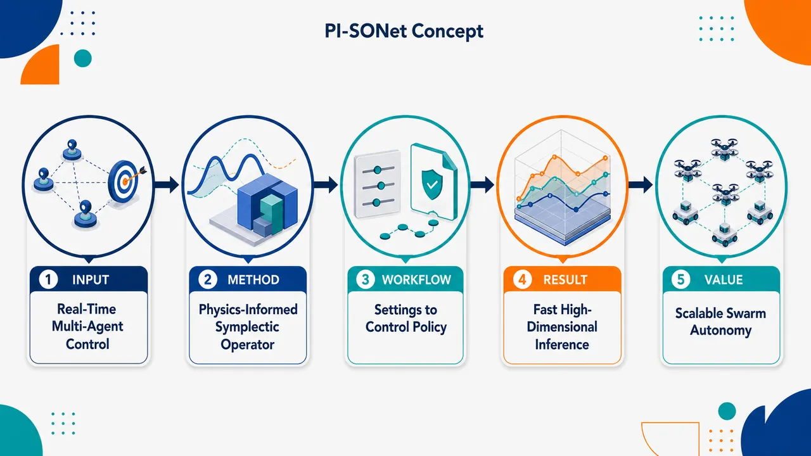
研究问题如何在数百维、多智能体、非凸非线性系统中实现实时最优控制，并避免每遇到新初始条件、目标或环境设定就重新求解庞大的最优控制问题。创新方法提出 PI-SONet：将物理信息约束嵌入神经算子，并结合保持哈密顿/辛几何结构的辛算子网络，使模型像“懂动力学规律的控制解生成器”，可在新设定下快速预测最优控制策略。工作流程输入多智能体系统设定、动力学参数、边界/目标条件；神经算子学习从问题设定到控制解的映射；物理约束校正动力学一致性，辛结构模块保持几何性质；输出可实时使用的多智能体最优控制轨迹或控制策略。关键结果PI-SONet 被用于数百维非凸非线性多智能体控制场景，核心表现是支持快速推断最优控制解，减少新任务下从零开始数值优化的计算负担，面向实时控制需求。应用价值适用于无人机群、机器人集群、自动驾驶车队、分布式能源或航天编队等需要高维协同决策的系统，可将耗时离线求解转化为快速在线控制生成。核心概览
本文提出 PI-SONet，一种面向多智能体系统实时最优控制的物理信息辛算子网络，用于处理数百维非凸非线性控制问题，并减少新设定下从头重算的需求。
方法要点
- 将物理约束引入神经算子框架，以增强模型对系统动力学或控制结构的遵循能力。
- 采用“辛算子网络”思想，可能用于保持哈密顿/辛结构相关的几何性质；具体结构摘要未详述。
- 面向多智能体最优控制任务，目标是实现对不同问题设定的快速推断或复用。
- 针对高维、非凸、非线性控制问题设计；训练方式、损失函数和数据来源摘要未详述。
关键结果
- PI-SONet 被描述为可用于数百维非凸非线性多智能体控制问题。
- 其主要优势是避免在每个新设定下完整重新计算最优控制解。
- 摘要暗示该方法支持实时最优控制，但具体速度、精度、基准对比和实验规模未详述。
创新性判断
- 可能的新颖点在于把物理信息约束与辛结构保持的算子网络结合，用于高维多智能体最优控制；这一组合相对常规神经网络控制或普通神经算子具有一定新意。
- 另一潜在创新是将该框架用于“新设定快速适配/推断”，减少重复求解开销；但其泛化机制和适用边界摘要未详述。
- 是否显著优于已有物理信息神经网络、神经算子或辛神经网络方法，摘要未提供实验对比，无法确定。
-
11
📊 含图深析
📖 展开分析 + 配图
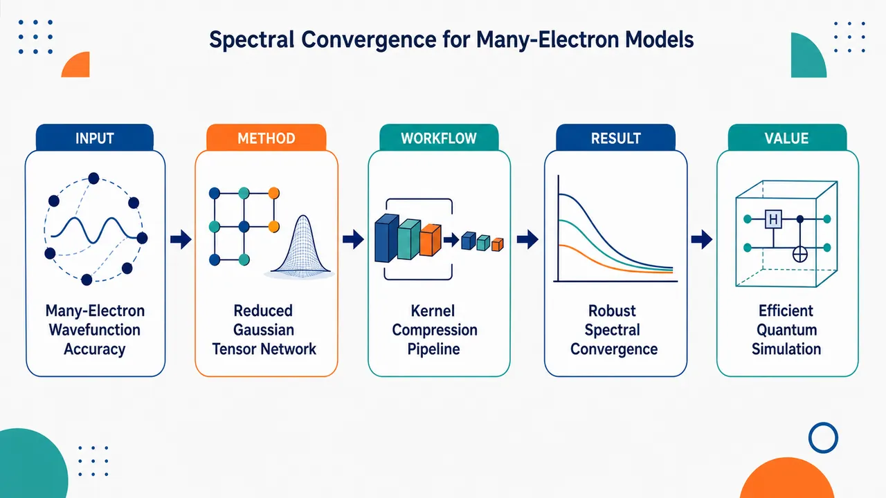
研究问题如何用更低张量分解基数、更严格物理约束的神经网络波函数，高精度求解一维软库仑多电子薛定谔方程，并验证其随基数增加是否呈现谱收敛。创新方法将高斯和张量神经网络、核函数高斯和近似的模型降阶、Slater 行列式反对称结构结合起来：用高斯和压缩多电子相互作用与波函数表达，用降阶减少张量基数，用行列式结构从网络架构层面严格保证费米子反对称性。工作流程输入一维软库仑多电子体系与核函数高斯和近似；先对核函数近似进行模型降阶，压缩所需张量分解基数；再构造高斯和张量神经网络波函数；通过 Slater 行列式组装电子交换反对称结构；最后数值求解基态能量与波函数，并评估小基组精度和基数增加时的收敛曲线。关键结果改进模型在小基组下即可达到高精度；随着高斯和/张量基数增加，数值实验显示稳定的谱收敛趋势；模型降阶显著减少张量分解所需基数；Slater 行列式使反对称性被严格满足，而非依赖惩罚项或后验修正。应用价值为多电子薛定谔方程提供一种兼具物理结构、低秩压缩和高精度收敛的神经网络波函数方案，可用于计算量子物理中的电子结构模拟，并为更高维、更复杂多电子体系的高效求解提供方法基础。核心概览
本文属于计算量子物理与神经网络波函数近似方向，改进高斯和张量神经网络，用于求解一维软库仑多电子薛定谔方程，并研究其精度与谱收敛性。
方法要点
- 使用高斯和（sum-of-Gaussians）张量神经网络表示多电子波函数。
- 针对核函数的高斯和近似，引入模型降阶以减少张量分解基数。
- 采用 Slater 行列式结构严格保持费米子波函数的反对称性。
- 通过数值实验评估小基组条件下的精度与随基数增加的收敛行为。
- 具体网络结构、训练策略、优化算法和误差度量摘要未详述。
关键结果
- 改进后的方法在小基组下即可达到高精度。
- 数值结果显示，随着基数增加，方法表现出稳健的谱收敛。
- 通过模型降阶减少了张量分解所需基数。
- Slater 行列式保证了波函数反对称性，而不是通过惩罚项或近似约束实现。
- 具体测试体系规模、能量误差数值和对比基线摘要未详述。
创新性判断
- 可能的新颖点在于将高斯和张量神经网络、核函数高斯和近似下的模型降阶、以及 Slater 行列式反对称结构结合，用于一维软库仑多电子薛定谔方程。
- 相比一般神经网络波函数方法，其优势可能在于张量分解基数更低、反对称性严格满足，并具有谱收敛表现。
- “谱收敛”作为核心结果若有严格数值验证，可能是该工作的主要贡献之一；但是否包含理论证明，摘要未详述。
- 与已有高斯基、张量网络或费米神经网络方法相比的具体性能提升幅度，摘要未给出，无法确定。
- 12
- 13
- 14
- 15
- 16
- 17
- 18
- 19
- 20
- 21
- 22
- 23
- 24
- 25
- 26
- 27
- 28
- 29
- 30
- 31
- 32
- 33
- 34
- 35
- 36
- 37
- 38
- 39
- 40
- 41
- 42
- 43
- 44
- 45
- 46
- 47
- 48
- 49
- 50
- 51
- 52
- 53
- 54
- 55
- 56
- 57
- 58
- 59
- 60